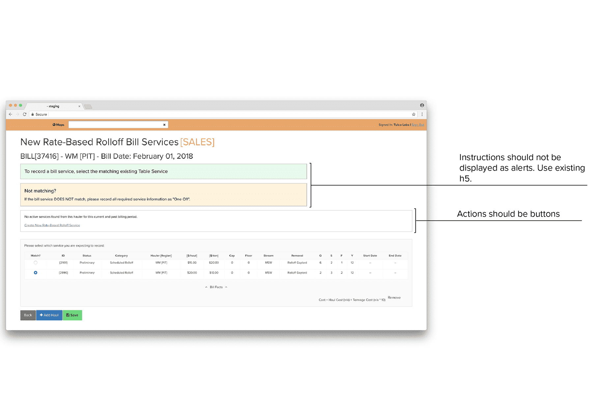
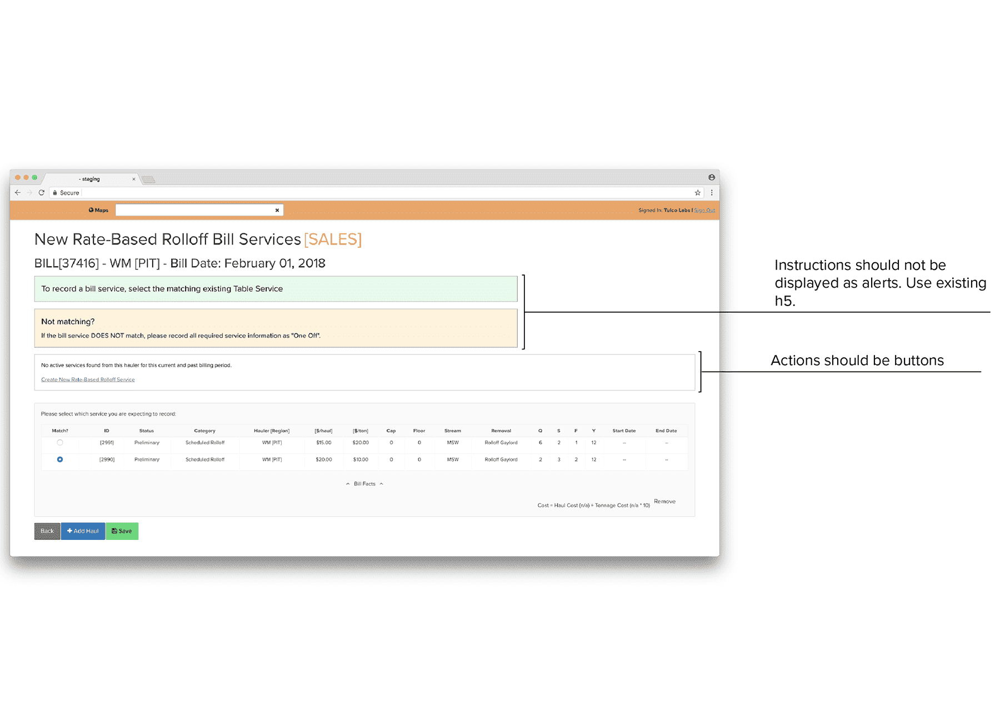

Improving client efficiency
In the past year I've been working on improving internal efficiency with a portfolio of B2B clients. This has involved interviewing stakeholders, producing video and clickable prototypes, and coding proof of concept dashboards. One particular project was a interface refactor that resulted in an 80% decrease in data entry time.

Scope and Research
I started the research process by reviewing internal training documents and then met with inside and outside sales staff, conducting observational studies and ridealongs, to learn the day to day and build a service blueprint.

I then sat down with leadership to understand what their goals and pain points, using the service blueprint as a conversation starter. For the first phase of work, we chose to focus on sales processes. Sales and operations leadership brought up data entry as an area for improvement; it was eating up sales staff’s as well as middle management's time.
I discussed various ideas with my team, including a data intake form and an OCR engine, but one observation stuck out: multiple individuals printed out bills and annotated them before entering them; there was a clear disconnect between the reality of the bills and the data entry. Becausde of this observation and a impact/complextiy analysis, we decided to move forward with a interface refactor
To further prepare for the pitch, I performed a modified keystroke level model (KLM) to better quantify inefficiencies and recurring patterns of use. A usability evaluation was also conducted, and I identified inconsistent terminology, visual elements, inefficient use of screen space, etc.
 

Production & Iteration
For the first iteration, I was concerned with keeping the changes minimal, as implementation was to be done by the client's engineering team. With their guidance, I used Ant Design components to start the redesign.
In addition to standardising components and improving the visual design, I moved the "add" buttons to the top of the page, reducing scrolling and eliminating an implied hierarchy or order, which better reflects the nature of the bills being entered.


I tested the rearranged buttons and the streamlined adding process on sales staff with a clickable prototype.
Second round of iterations focused on limiting interactions to a single page (no page redirects) and reducing and simplifying information. I also moved away from tables and thought along the lines of an online shopping cart metaphor.
I added key metrics at the top of the page to allow for skimming and displayed line items as “cards” rather than tables to improve legibility.
Deployment


I delievered a component guide and videos detailing interactions and continued working with their front end developer to ensure a smooth delivery. According to client feedback, the redesigned interface decreased data entry time by 80%.